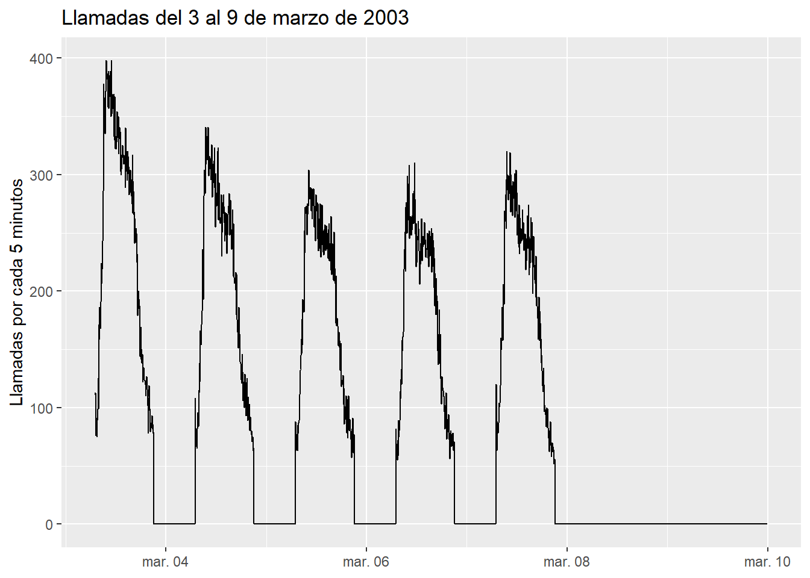
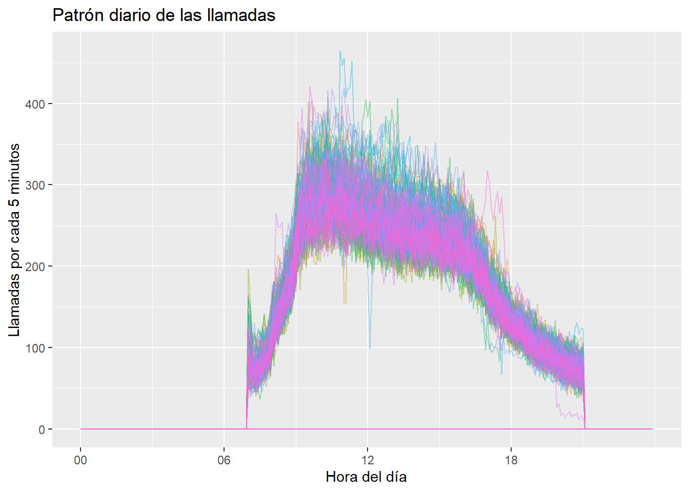
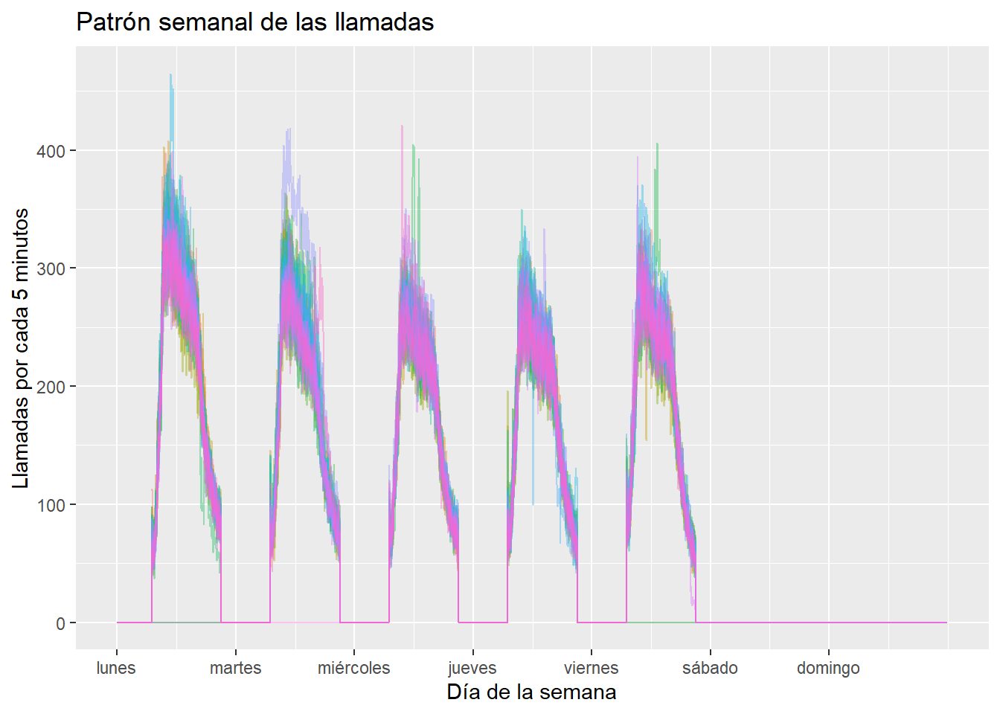
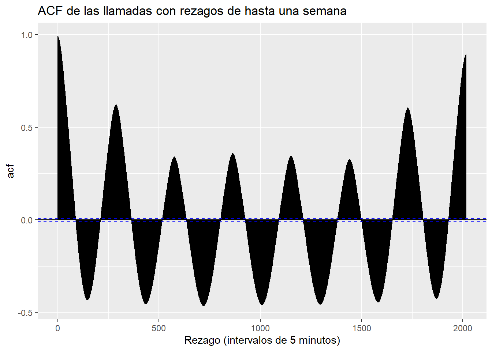
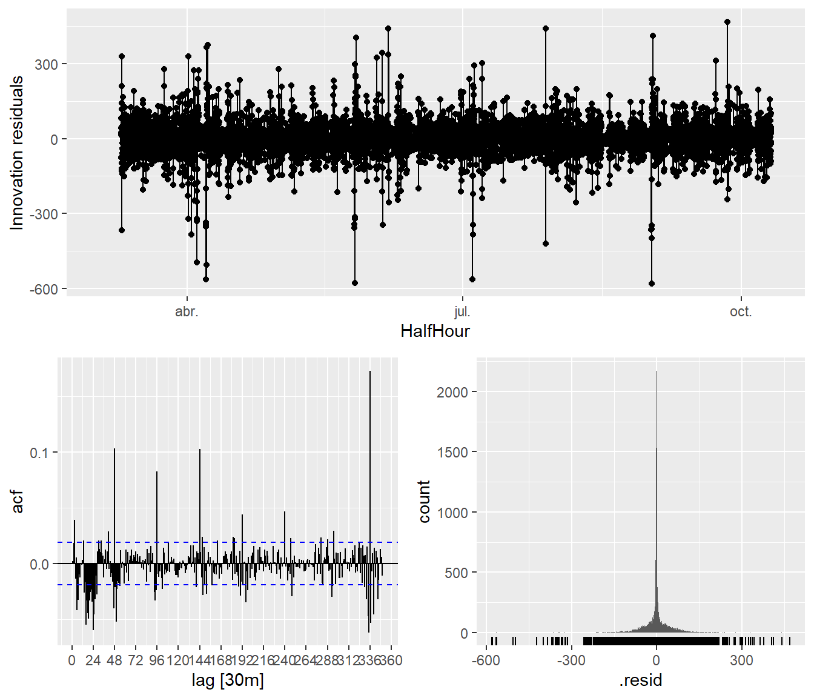
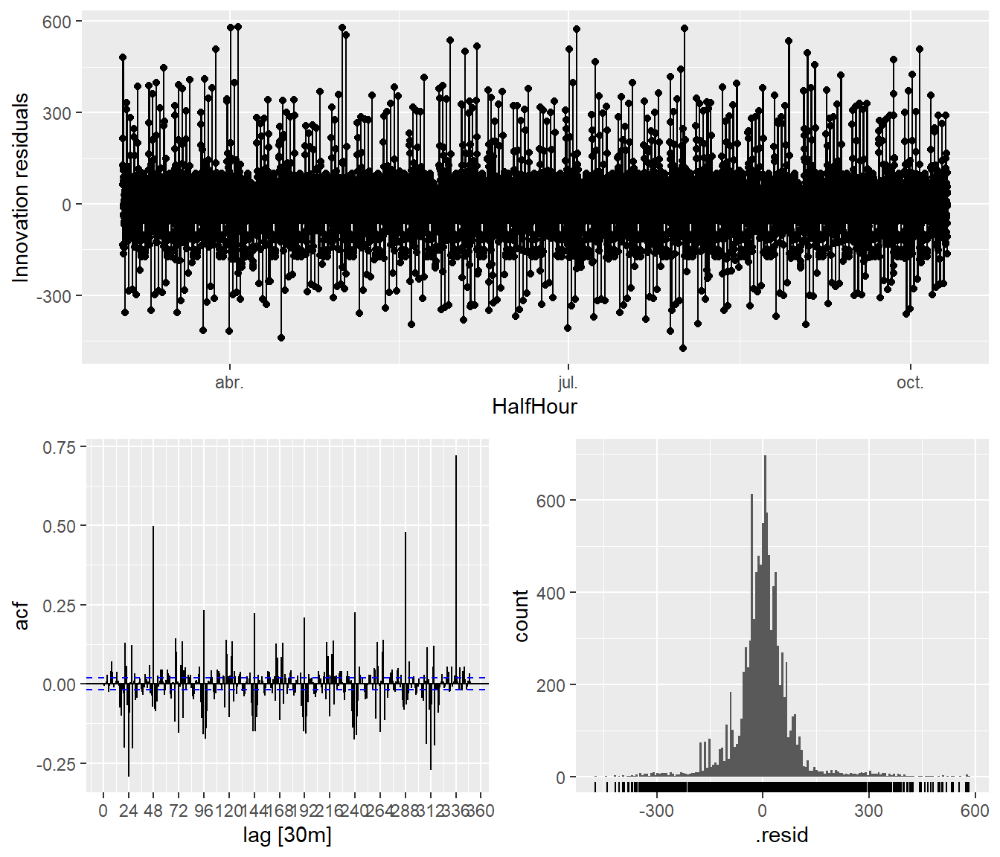
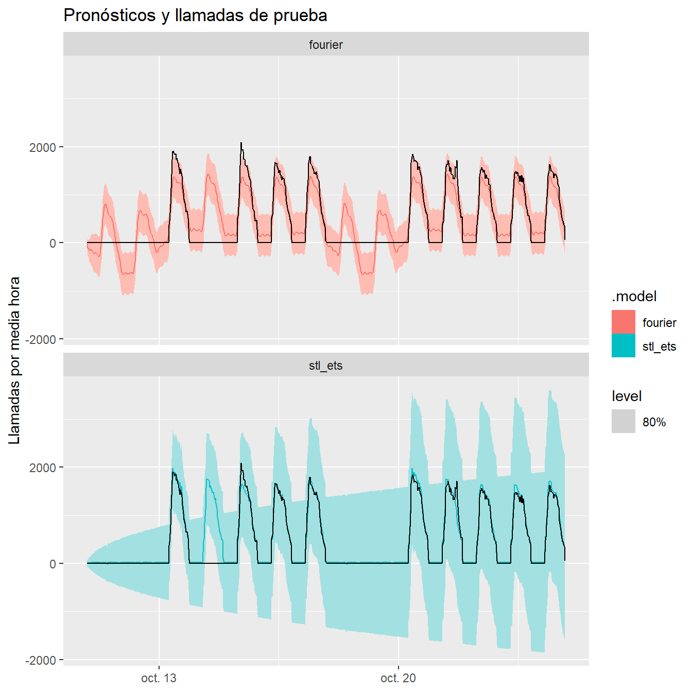

library(tidyverse)
library(fpp3)Estacionalidad compleja en las llamadas de un banco
Uso la serie bank_calls para analizar las llamadas que recibe un banco cada cinco minutos.
1. Análisis exploratorio
a) Patrón de una semana
Relleno los huecos con cero para incluir los horarios de cierre.
bank_calls |>
has_gaps()# A tibble: 1 × 1
.gaps
<lgl>
1 TRUE bank_calls_full <- bank_calls |>
fill_gaps(Calls = 0)
bank_calls_full |>
filter_index("2003-03-03" ~ "2003-03-09") |>
autoplot(Calls) +
labs(
title = "Llamadas del 3 al 9 de marzo de 2003",
y = "Llamadas por cada 5 minutos",
x = NULL
)
Veo más llamadas por la mañana de lunes a viernes y menos hacia la noche. En esta semana, el lunes tiene el pico más alto.
b) Estacionalidad diaria y semanal
Reviso los patrones diario y semanal con 288 y 2,016 intervalos de cinco minutos, respectivamente.
bank_calls_full |>
gg_season(Calls, period = "day", alpha = 0.4) +
labs(
title = "Patrón diario de las llamadas",
y = "Llamadas por cada 5 minutos",
x = "Hora del día"
) +
theme(legend.position = "none")
bank_calls_full |>
gg_season(Calls, period = "week", alpha = 0.4) +
labs(
title = "Patrón semanal de las llamadas",
y = "Llamadas por cada 5 minutos",
x = "Día de la semana"
) +
theme(legend.position = "none")
Aquí veo que las llamadas se concentran entre las 07:00 y las 21:00 de lunes a viernes. Durante las noches y los fines de semana tengo ceros.
c) Autocorrelación
bank_calls_full |>
ACF(Calls, lag_max = 7 * 24 * 12) |>
autoplot() +
aes(x = as.numeric(lag)) +
labs(
title = "ACF de las llamadas con rezagos de hasta una semana",
x = "Rezago (intervalos de 5 minutos)"
)
En la ACF veo valores altos en el primer rezago (0.992), a un día (0.623) y a una semana (0.892). Con esto identifico un patrón semanal más marcado que el diario.
2. Preparación de los datos
a) Agregación cada media hora
Sumo las llamadas cada media hora. Así me quedan 48 observaciones por día y 336 por semana.
bank_calls_halfhour <- bank_calls_full |>
index_by(HalfHour = floor_date(DateTime, "30 minutes")) |>
summarise(Calls = sum(Calls))
bank_calls_halfhour# A tsibble: 11,309 x 2 [30m] <UTC>
HalfHour Calls
<dttm> <dbl>
1 2003-03-03 07:00:00 560
2 2003-03-03 07:30:00 609
3 2003-03-03 08:00:00 1050
4 2003-03-03 08:30:00 1371
5 2003-03-03 09:00:00 2073
6 2003-03-03 09:30:00 2256
7 2003-03-03 10:00:00 2238
8 2003-03-03 10:30:00 2272
9 2003-03-03 11:00:00 2156
10 2003-03-03 11:30:00 2073
# ℹ 11,299 more rowsb) Tratamiento de los huecos
Mantengo los ceros de las noches y los fines de semana para representar los cierres. También relleno seis días laborales sin datos, aunque no puedo confirmar que el centro de llamadas estuviera cerrado. Uno es el 14 de octubre, dentro de la prueba.
bank_calls_halfhour |>
has_gaps()# A tibble: 1 × 1
.gaps
<lgl>
1 FALSEc) Separación de entrenamiento y prueba
Dejo las últimas 672 observaciones para probar los modelos, del 10 de octubre a las 21:30 al 24 de octubre a las 21:00 de 2003. Uso las 10,637 anteriores para entrenarlos.
h <- 2 * 7 * 48
bank_calls_train <- bank_calls_halfhour |>
slice_head(n = nrow(bank_calls_halfhour) - h)
bank_calls_test <- bank_calls_halfhour |>
slice_tail(n = h)3. Ajuste de los modelos
a) STL con dos periodos estacionales
Con STL separo los ciclos diario y semanal. Después uso ETS sobre la serie ajustada, sin agregar otra estacionalidad.
stl_spec <- STL(
Calls ~ season(period = 48) + season(period = 336),
robust = TRUE
)
bank_calls_stl_fit <- bank_calls_train |>
model(
stl_ets = decomposition_model(
stl_spec,
ETS(season_adjust ~ season("N"))
)
)b) Regresión armónica con errores ARIMA
Uso Fourier con \(K_1 = 6\) para el patrón diario y \(K_2 = 3\) para el semanal. Para los errores uso ARIMA sin una parte estacional adicional.
bank_calls_fourier_fit <- bank_calls_train |>
model(
fourier = ARIMA(
Calls ~
fourier(period = 48, K = 6) +
fourier(period = 336, K = 3) +
PDQ(0, 0, 0),
stepwise = TRUE,
approximation = TRUE
)
)c) Diagnóstico de residuales
Me fijo en los rezagos 48 y 336 de los residuales, que equivalen a un día y una semana.
bank_calls_stl_fit |>
select(stl_ets) |>
gg_tsresiduals(lag_max = 350)
bank_calls_fourier_fit |>
select(fourier) |>
gg_tsresiduals(lag_max = 350)
Todavía veo autocorrelación en ambos modelos. En los rezagos 48 y 336 obtengo 0.103 y 0.173 con STL + ETS, frente a 0.498 y 0.722 con Fourier. Los picos pasan las bandas, sobre todo en Fourier.
4. Evaluación de los pronósticos
a) Pronóstico de las últimas dos semanas
bank_calls_stl_fc <- bank_calls_stl_fit |>
forecast(h = nrow(bank_calls_test))
bank_calls_fourier_fc <- bank_calls_fourier_fit |>
forecast(h = nrow(bank_calls_test))
bank_calls_fc <- bind_rows(bank_calls_stl_fc, bank_calls_fourier_fc)
bank_calls_accu <- bank_calls_fc |>
accuracy(bank_calls_halfhour) |>
select(.model, RMSE, MAE, MASE, RMSSE) |>
arrange(RMSE)
bank_calls_accu# A tibble: 2 × 5
.model RMSE MAE MASE RMSSE
<chr> <dbl> <dbl> <dbl> <dbl>
1 stl_ets 266. 91.2 0.894 1.32
2 fourier 380. 285. 2.80 1.88Me quedo con STL + ETS para este periodo. Obtengo un RMSE de unos 266 y un MAE de 91.2 llamadas por media hora, frente a 380 y 285 con Fourier. Incluyo los ceros que asigné a los huecos y no uso MAPE porque hay valores iguales a cero.
b) Pronósticos frente al conjunto de prueba
Comparo la serie de prueba, en negro, con el pronóstico de cada modelo, en color. Incluyo intervalos de predicción del 80 %.
bank_calls_fc |>
autoplot(bank_calls_test, level = 80) +
facet_wrap(~ .model, ncol = 1) +
labs(
title = "Pronósticos y llamadas de prueba",
y = "Llamadas por media hora",
x = NULL
)
Veo que STL + ETS se acerca más a cero durante los cierres, pero ambos modelos dan valores distintos de cero y algunos negativos. Si usara esas predicciones para asignar personal, podría poner gente en horarios sin atención. Las llamadas negativas tampoco tienen sentido.
c) Posibles predictores
Con STL + ETS puedo trabajar sólo con el historial, y aquí lo elijo por su menor error en la prueba. También probaría un indicador de apertura (IsOpen), los festivos y las campañas del banco, siempre que tenga esa información antes de pronosticar.